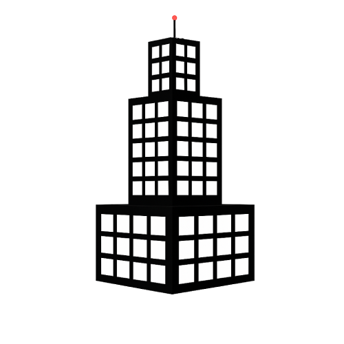

Sky Tower - Estado Actual |
|
Menú |
Estado de la TorreSky Tower está actualmente cerrada debido a daños estructurales severos causados por múltiples desastres naturales. Reporte de Daños
Fecha de ReaperturaNo hay una fecha oficial de reapertura. Por ahora, el acceso está completamente restringido. |